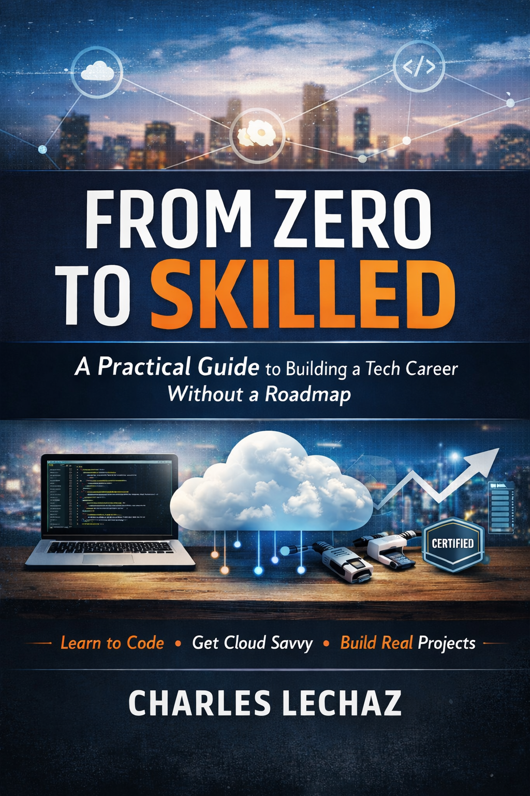

Books > Computers & Technology > Programming > Careers
by Charles Lechaz (Author)
⭐⭐⭐⭐☆ 4.6 out of 5 • 1,248 ratings
From Zero to Skilled is a clear, honest guide for anyone trying to build a career in technology without a computer science degree, insider connections, or a perfect plan.
Written by a self-taught developer navigating full-stack development, cloud certifications, and real-world projects, this book focuses on what actually works—and what beginners waste time on.
Instead of overwhelming theory, you’ll learn how to choose skills strategically, build meaningful projects, stay consistent, and avoid the burnout that causes most people to quit before they ever see results.
“This book is written for the person who’s tired of watching tutorials and ready to start building something real.”